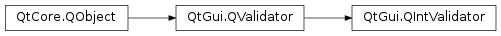

QIntValidator¶
Synopsis¶
Signals¶
- def
bottomChanged(bottom) - def
topChanged(top)
Detailed Description¶
The
PySide2.QtGui.QIntValidatorclass provides a validator that ensures a string contains a valid integer within a specified range.Example of use:
validator = QIntValidator(100, 999, self) edit = QLineEdit(self) # the edit lineedit will only accept integers between 100 and 999 edit.setValidator(validator)Below we present some examples of validators. In practice they would normally be associated with a widget as in the example above.
pos = 0 v = QIntValidator(100, 900, self) str = "1" v.validate(str, pos) # returns Intermediate str = "012" v.validate(str, pos) # returns Intermediate str = "123" v.validate(str, pos) # returns Acceptable str = "678" v.validate(str, pos) # returns Acceptable str = "999" v.validate(str, pos) # returns Intermediate str = "1234" v.validate(str, pos) # returns Invalid str = "-123" v.validate(str, pos) # returns Invalid str = "abc" v.validate(str, pos) # returns Invalid str = "12cm" v.validate(str, pos) # returns InvalidNotice that the value
999returns Intermediate. Values consisting of a number of digits equal to or less than the max value are considered intermediate. This is intended because the digit that prevents a number from being in range is not necessarily the last digit typed. This also means that an intermediate number can have leading zeros.The minimum and maximum values are set in one call with
PySide2.QtGui.QIntValidator.setRange(), or individually withPySide2.QtGui.QIntValidator.setBottom()andPySide2.QtGui.QIntValidator.setTop().
PySide2.QtGui.QIntValidatoruses itsPySide2.QtGui.QValidator.locale()to interpret the number. For example, in Arabic locales,PySide2.QtGui.QIntValidatorwill accept Arabic digits.Note
The
QLocale.NumberOptionsset on thePySide2.QtGui.QValidator.locale()also affect the way the number is interpreted. For example, sinceQLocale.RejectGroupSeparatoris not set by default, the validator will accept group separators. It is thus recommended to useQLocale.toInt()to obtain the numeric value.See also
PySide2.QtGui.QDoubleValidatorPySide2.QtGui.QRegExpValidatorQLocale.toInt()Line Edits Example
-
class
PySide2.QtGui.QIntValidator([parent=nullptr])¶ -
class
PySide2.QtGui.QIntValidator(bottom, top[, parent=nullptr]) Parameters: - bottom –
PySide2.QtCore.int - top –
PySide2.QtCore.int - parent –
PySide2.QtCore.QObject
Constructs a validator with a
parentobject that accepts all integers.Constructs a validator with a
parent, that accepts integers fromminimumtomaximuminclusive.- bottom –
-
PySide2.QtGui.QIntValidator.bottom()¶ Return type: PySide2.QtCore.int
-
PySide2.QtGui.QIntValidator.bottomChanged(bottom)¶ Parameters: bottom – PySide2.QtCore.int
-
PySide2.QtGui.QIntValidator.setBottom(arg__1)¶ Parameters: arg__1 – PySide2.QtCore.intSee also
-
PySide2.QtGui.QIntValidator.setRange(bottom, top)¶ Parameters: - bottom –
PySide2.QtCore.int - top –
PySide2.QtCore.int
Sets the range of the validator to only accept integers between
bottomandtopinclusive.- bottom –
-
PySide2.QtGui.QIntValidator.setTop(arg__1)¶ Parameters: arg__1 – PySide2.QtCore.intSee also
-
PySide2.QtGui.QIntValidator.top()¶ Return type: PySide2.QtCore.intSee also
-
PySide2.QtGui.QIntValidator.topChanged(top)¶ Parameters: top – PySide2.QtCore.int
© 2018 The Qt Company Ltd. Documentation contributions included herein are the copyrights of their respective owners. The documentation provided herein is licensed under the terms of the GNU Free Documentation License version 1.3 as published by the Free Software Foundation. Qt and respective logos are trademarks of The Qt Company Ltd. in Finland and/or other countries worldwide. All other trademarks are property of their respective owners.